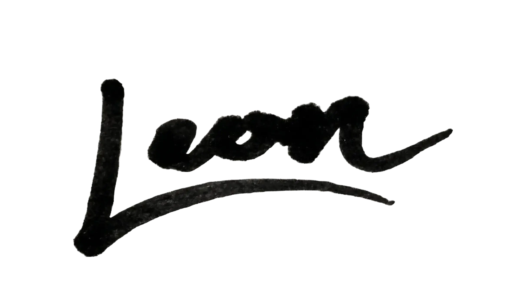

De verschuiving van losse taakjes naar complete controle
Toen we voor het eerst met AI begonnen te werken, was de visie simpel: tijdbesparing. Een tool om sneller een tekst te schrijven, het repeterende werk te verminderen. Het leek onschuldig en vooral heel erg handig.
Maar kijk eens naar de huidige markt. We gaan in een razend tempo van losse tools naar zelfstandige systemen. In het begin hadden we chatbots, die zetten een simpele vraag om in een antwoord.
De systemen van nu doen heel iets anders: ze zetten een doel om in een resultaat. Je geeft een doel, en het systeem gaat volledig zelfstandig aan de slag om dat voor elkaar te krijgen.
Dat klinkt als de ultieme oplossing, maar het zorgt voor een onzichtbaar probleem. Het idee was tijdbesparing, het resultaat was het uitbesteden van ons eigen denken.
Het gevaar van de toeschouwer
Een AI nooit voor je laten denken, is misschien wel de belangrijkste regel van het moment. Want wie niet zelf nadenkt, die stuurt niet meer, die volgt.
Zodra je als ondernemer het beslissen overlaat aan een systeem, is AI geen hulpmiddel meer. Het wordt je kompas. Op dat moment ben je eigenlijk geen eigenaar meer, je wordt toeschouwer.
Toch is er een kleine groep ondernemers die dat anders aanpakt. Die AI inzet als instrument, niet als kompas. Die niet vraagt "Wat kan AI automatiseren?" maar "Wat wil ik bouwen?"
Het verschil tussen die twee groepen wordt in de komende jaren bepalend.
Efficiëntie is slechts een middel, geen einddoel
Om AI te gebruiken zonder daar de controle te verliezen, zou je je kunnen vasthouden aan de volgende principes:
- Blijf zelf beslissingen nemen. Jij bent de 'human in the loop', hak zelf de knopen door.
- Blijf nieuwsgierig. Laat AI je vragen niet wegnemen, de technologie vraagt er juist om dat jij scherp blijft.
- Blijf creëren. Kijk niet alleen hoe je uren en kosten wegsnijdt, zoek naar manieren om extra waarde te creëren met de middelen die je vrijspeelt.
Haal alles uit de technologie wat erin zit. Maar blijf de baas over je eigen machine, over je eigen bedrijf.
AI maakt je sneller, de richting geef jij.
